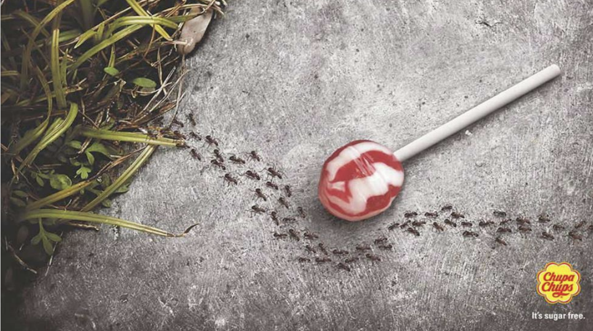

Welcome
This site keeps my IB English work in one place, with clean sections for Paper 1, Paper 2, the Individual Oral, and our 2025-2027 text selection plans.
- Fast scroll and section highlights
- Clear tables for SL and HL texts
- No extra images added
Paper 1 - Visual Texts

Elephant Turning into Sand
- Purpose: Show desertification kills wildlife.
- Audience: Anyone who cares about the planet.
- Style: Elephant fades to dust, spotlight focus.
- Big idea: Nature is dying quickly, urgent, sad.
- Techniques: Photorealism, blending, soft light.

Golfer with an Axe
- Purpose: Critique forest loss from golf courses.
- Audience: Golfers and land developers.
- Style: Calm scene, weapon swap shocks us.
- Big idea: Fun sports can hide real damage.
- Techniques: Juxtaposition, irony, bold contrast.

Winter Collection Girl
- Purpose: Expose child poverty in a fashion style.
- Audience: Fashion industry and wider public.
- Style: Studio lighting, plain grey backdrop.
- Big idea: Trendy ads ignore real suffering.
- Techniques: Irony, direct gaze, minimal design.

Weight Watchers Doors
- Purpose: Promote slimming service visually.
- Audience: Anyone wanting to lose weight.
- Style: Two doors, exit door slimmer.
- Big idea: You will shrink after their program.
- Techniques: Visual pun, clean minimalism.

Chupa Chups Sugar-Free
- Purpose: Show lollipop has zero sugar.
- Audience: Parents, kids, health minded buyers.
- Style: Realistic photo, ants bypass sweet.
- Big idea: Even ants do not want it, no sugar.
- Techniques: Humor, symbolism, muted palette.
Glasses, See Clearly
- Purpose: Show glasses sharpen your world.
- Audience: People needing vision help.
- Style: Painting turns realistic inside lens.
- Big idea: Glasses reveal hidden detail.
- Techniques: Focus blur, surreal twist.
Paper 2
I will compare two prescribed books, looking at themes like power, love, and justice, plus character arcs, style, and context. Goal: a balanced argument with strong quotes.
Individual Oral
10 minute presentation, 5 minute Q&A.
- Select a global issue, for example inequality, freedom, climate.
- Pick 1 literary and 1 non literary text.
- Analyse how each shows the issue, language, visuals, context.
- Link both, end with the impact on the audience.
IBDP Language A HLSL: Text Selection Guidelines 2025-2027
Teacher: Pauline Westwood
What counts as a "work"
- 1 single literary text, for example novel, autobiography, biography
- 2 or more short literary texts, for example novella
- 5-10 short stories
- 5-8 essays
- 10-15 letters
- A long poem of over 600 lines or 15-20 poems
Poetry
Drama
Prose, fiction
Prose, non fiction
PRL links
PRL is on MyIB → Programme Resource Centre → Diploma Program → Language and Literature → In Practice → Prescribed Reading List.
MyIB portal
Direct PRL site
Standard Level, plan
Requirements
- Pick at least 4 literary works
- No repeat authors or texts across OFS courses
- Cover at least two literary forms, periods, countries or regions, and two continents as defined in the PRL
- One work per Area of Exploration
AoE coverage
Readers, writers, texts
Time and space
Intertextuality
From the PRL, in English
| Title | Form | Period | Country | Continent |
|---|
| Romeo and Juliet |
Renaissance drama |
1597 |
UK |
Europe |
From the PRL, work in translation
| Title | Form | Period | Country | Continent |
|---|
| A Doll’s House |
Modern drama |
1870 |
Norway |
Europe |
Our free choice
| Title | Form | Period | Country | Continent |
|---|
| A Streetcar Named Desire |
Modern drama |
1947 |
United States of America |
North America |
| The Whitsun Weddings |
Modern poetry |
1964 |
UK |
Europe |
Bodies of work, SL
- The Political Art of Banksy
- UK Government WW1 Propaganda Posters
- Liza Donnelly’s Satirical Cartoons
- Robert Capa’s Photographs
Higher Level, plan
Requirements
- Pick at least 6 literary works
- No repeat authors or texts across OFS courses
- Cover at least three literary forms, three periods, three countries or regions, and two continents as defined in the PRL
- Two works per Area of Exploration
AoE coverage
Readers, writers, texts
Time and space
Intertextuality
From the PRL, in English
| Title | Form | Period | Country | Continent |
|---|
| Romeo and Juliet |
Renaissance drama |
1597 |
UK |
Europe |
| The Smiths |
Song lyrics |
1980s |
UK |
Europe |
From the PRL, work in translation
| Title | Form | Period | Country | Continent |
|---|
| A Doll’s House |
Modern drama |
1870 |
Norway |
Europe |
| The Nest of Vipers |
Modern novel |
1932 |
France |
Europe |
Our free choice
| Title | Form | Period | Country | Continent |
|---|
| A Streetcar Named Desire |
Modern drama |
1947 |
United States of America |
North America |
| The Whitsun Weddings |
Modern poetry |
1964 |
UK |
Europe |
Bodies of work, HL
- The Political Art of Banksy
- U.K Government WW1 Propaganda Posters
- Liza Donnelly’s Satirical Cartoons
- Robert Capa’s Photographs
- Ugur Gallenkus’s Digital Photography
- Film, Life is Beautiful
Language and Literature SL / HL Course Design Checklist
- Minimum 4 / 6 literary works and an equal number of non literary bodies of work
- Minimum of 1 / 2 PRL works in the studied language
- Minimum of 1 / 2 PRL works in translation
- Minimum of 2 works free choice, may be in translation
- Minimum of 1 / 2 works for each Area of Exploration
- Cover 2 / 3 literary forms, 2 / 3 time periods, 2 / 3 countries or regions, at least 2 continents
- Enough bodies of work to support the IO and the HL Essay
MyIB portal
PRL site